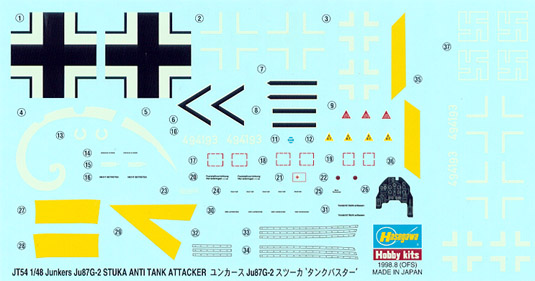

{kind=link}
{kind=link}
{kind=link}
{kind=link}
{kind=link}
{kind=link}
{kind=link}
{kind=link}


Hasegawa 1/48 JU-87 G-2 Stuka aka 'Kanonenvogel' or 'Panzerknacker'
Kit #9054 MSRP $29.98 USD
Images and text Copyright � 2004 by Matt Swan
Developmental Background
'Stuka' or 'Sturzkampfflugzeug' was the general German terminology for dive-bombers, but the JU-87 with its inverted gull wing, and fixed-undercarriage was the most famous and feared of all. Stuka entered the world's vocabulary in May 1940. The mere appearance of its angular silhouette in the summer sky triggered 'Stuka fright' among the columns of soldiers and refugees fleeing across France. Ordered to attack road junctions, and especially bridges to hinder the movement of Allied ground forces, the Stuka often found their targets packed with escaping civilians. With sirens ('Jericho Trumpets') fitted to terrorize their victims, the bombers attacked with surgical precision and then returned to strafe the survivors with their machine guns. From its level flight speed of 255 mph the Stuka accelerated to 335 mph as it dived some 4,500 ft.
The Stuka was designed by Hans Pohlmann and the first prototype, ironically powered by an imported Rolls Royce Kestrel engine, flew in 1935. Later production models carried the Junkers Jumo 211J-1 inverted V-12 engine. The Stuka was built to dive vertically on its target. This offered far greater accuracy than was possible with level bombing. In 1937 a handful of JU-87A-1s were sent to Spain where Germany was providing military aid to the Nationalist forces. Many senior Luftwaffe officers were unimpressed with the Stuka , criticizing it for being too slow , too cumbersome and an easy target for enemy fighters. However its performance in Spain was considered excellent. There were over 300 Stukas in service by time the invasion of Poland occurred and they performed well enough, but it was over France and the Low Countries in 1940 that they stunned the world.
The Stukas were like flying artillery, but with far greater range and flexibility. However the JU-87 did rely on German air superiority. Even over France, there were a number of disasters. One entire staffel (flight) was wiped out by five French fighters on May 12th. With a 100 mph speed advantage and armed with 20-mm cannon, the French fighters made short work of the lumbering and unmaneuverable Stukas. Limited numbers of Stukas served in North Africa and the Italian campaign, but it was in Russia that the JU-87 had its greatest impact. In 1941 the Luftwaffe effectively wiped out the Soviet air force and the 290 Stukas sent to the Eastern Front could attack without fear of interception.
Hans-Ulrich Rudel pioneered the 'tank busting' JU-87G with its 37mm Bordkannone and claimed 519 tank 'kills' by the end of the war. The JU-87G-1, developed from the JU-87D-3 (also the G-2 developed from the longer wing D-5) and introduced in 1943, was the last version of the Stuka to be mass-produced. Now the Stuka had lost its role as a dive-bomber to become a full-time tank killer. Bombs were replaced by two 37 mm guns mounted under the wings that could penetrate the top armor of a tank. Soon they earned nicknames like 'Kanonenvogel' (Cannonbird) and 'Panzerknacker' (tank cracker). In the hands of pilots such as Rudel, they wreaked havoc among the Russian tanks formations until the end of the war but the weight and drag further reduced the Stukas already marginal performance making the plane easy prey for the Russian fighters.
JU-87s were supplied to the Axis air forces of Romania, Italy, Hungary and Bulgaria. Stuka production peaked at 1,814 units. Some 5,700 were completed before production ceased in 1944.
The Kit
This is another one of those boxes filled to the brim with plastic goodness. The box itself is slightly larger than the normal Hasegawa box and once you lift the lid it becomes apparent why. Inside we have sixteen different sprues of gray polystyrene parts, mostly individually bagged. Also included here are a medium sized sprue of clear parts and a small sprue of poly caps for use on the propeller shaft, need only one but get four.
As is fairly standard with Hasegawa kits, all the parts display very finely engraved panel lines and rivets, so fine that I am concerned about destroying them when finishing a seam or filling them with paint. The control surfaces are delineated with more heavily engraved lines. Heavily formed plastic wedges that are cast in place and very out of scale represent flap and control surface actuators. The nicely formed paddle blades of the propeller are individual pieces with locator tabs to ensure proper alignment. Interior cockpit detail, while not exceptional is adequate for the general modeler. The lower half of the wing is cast as a single piece that holds the correct dihedral on the wing. The upper wing sections appear to fit well and so too do the fuselage pieces. The 37 mm cannons and their wing mounts are accurate in outline but lack good detail. The cannon barrels are solid cast with very soft detail around the muzzles and the wing mounts are a little heavy in appearance, which is hard to avoid when casting these pieces in polystyrene. The clear parts are all nicely done with finely raised panel lines and have good clarity. I see no evidence of abnormal flash on any of the parts, no obvious sink marks or injector pin markings.
All in all, we get 113 pieces in light gray plastic, 8 pieces on the clear sprue and 4 poly caps for a total of 125 pieces in the box. The Stuka is one of the more popular model kits among World War 2 modelers and Hasegawa does produce several variants and as a result of this many of these parts will not be used for the G-2 variant, 40 to be specific. So, the net total of usable parts for this kit is 85.
You can click on the images above to view larger pictures.
Decals and Instructions

While we do get a fairly large sheet of decals here, they only represent one aircraft, Kdr./SG2. The decals cover many of the common service stencils and markings as well as the traction strips for the wing walk area (wonder whose bright idea that was) and all the basic national markings. Something that is becoming fairly unusual now is the inclusion of swastikas, they are not shown on the box art but are included on the sheet. We are given a decal to overlay on the dashboard if you are not up to painting the detail yourself. The color density is good and print registry is good. Previous experience with Hasegawa decals has proven them to be thin and easily applied with some light setting solution.
The instructions consist of a large, four panel foldout. It includes a nice section of historical background with some technical specifications but never once mentions Hans Rudel, which I found interesting. There is a complete pictorial of all the parts trees and a color chart that gives you paint codes for Gunze-Sangyo Aqueous paints and Mr. Color paint codes. Construction directions consist of thirteen exploded view drawings that include a variety of color call-outs. Two panels of the instructions are devoted to the basic splinter camouflage and decal placement.
Overall the instructions are pretty straightforward and logical in their presentation and organization.
Accessories
While there are many aftermarket detail packages aimed at the Stuka there are only a few that are specific to the G model. True details offers a set of replacement wheels that are suitable for this kit, Eduard offers some general PE detail kits that can be used here and Aires has a few different cockpit sets that can be adapted for this kit. Verlinden makes a nice set that combines both resin and PE and covers the engine compartment and the cockpit. Both Moskit and Ultracast make replacement exhaust shrouds for it and there are many different mask sets and decals packages out there.
Those are all general upgrade packages though, now I want to look at two of the packages that are specific to this aircraft.
Aires 37mm Bordkannone
Kit# 4169 MSRP $33.00
For the general modeler those kit cannons will do just fine but for the advanced modeler you will most likely want to either replace them or at least dress them up a little. For replacement this kit from Aires is great. Not only does it give you a very highly detailed set of resin pieces but also now you can open up those cannon casings and show some of the interior details.
This little package includes forty individual resin pieces on heavy casting blocks. Of those forty pieces, twelve of them are individual cannon rounds and two are clips of cannon rounds. These will be very useful in any diorama setting where the cannons are being serviced or reloaded. The housings have nicely engraved panel lines and have very nicely done interior panel details. The modeler has a choice of two different cannons that can be constructed and can model them open or closed. The mounting hardware for the cannons is better than what is provided in the Hasegawa kit but still leaves something to be desired. The cannon barrels are solid cast and the modeler will have to bore out the business end of the unit. The detail around the muzzle is just as soft as it was on the basic Hasegawa kit part so there is no real improvement on this particular feature.
The quality of the resin is very good, there are no apparent air bubbles, micro bubbles or miscasting on any of the pieces. From my initial examination there does not appear to be any warpage either. The instructions provided by Aires are brief to say the least. It�s a small three-fold page that gives us a pictorial of the parts with part numbers and a single larger exploded view encompassing both potential construction methods on the cannons. It does not give us any technical information on the guns or any mounting directions.
Eduard JU-87 G-2 Stuka Detail Set
Kit# 48-298 MSRP $19.98
Whether you should decide to replace the original kit cannons or simply dress them up you should take a good, hard look at this next accessory package. Produced by Eduard out of the Czech Republic, this kit offers many fine photo etched detail parts at a reasonable price. First I need to talk just a little more about those nifty cannons.
As I have noted earlier, neither the Hasegawa cannons nor the Aires cannons have very solid detail around the muzzles. This package takes care of that by replacing the muzzles with PE barrel mounts and flash suppressors. These give the guns a very realistic look. Another item overlooked by both previous manufactures is the complex series of hydraulic plumbing that ran from the cannons into the wings. Eduard provides us with three sets of plumbing to recreate this look and it is very impressive when completed but a bit fiddly getting in place. Another item that is dealt with well here are the mounting frames for the cannons to the wings. These being done as PE parts are a much better representation that either the plastic or the resin parts.
The Eduard kit does a lot to dress up the cockpit and this is all very visible considering the amount of greenhouse glass on this aircraft. Various control panels and levers are added and many plastic pieces are replaced with PE details. The dash is one of the big areas of improvement in the front office. The Eduard set includes an acetate sheet of instrument faces housed behind a very nicely detailed PE dashboard. There are a few other small panels that utilize the acetate faces in addition to the main dash.
On the exterior of the craft all those out of scale flight control actuators get replaced with finely done PE hinges. The wing radiators and oil cooler under the engine get a makeover from this package also. Other various details covered by the kit include structural reinforcing panels, replacement of the decal wing walk traction strips for more accurate raised pieces, armor plates, various grab handles, gun details and ammo box dressings. This package includes over 100 photo-etched pieces for your enjoyment. There are three pages of instructions included to help you find where all these pieces fit into the scheme of things and those instructions appear to be well done and easy to follow. For less than twenty bucks this is a hell of an add-on for this kit.
Conclusions
Besides the Bf/Me 109 the Stuka has got to be one of the most recognizable German aircraft of World War 2. It even had a phobia named after it � Stuka Fright. You don�t get that with a Spitfire or a Liberator. This model is well engineered and Hasegawa has had many years to work out any bugs that may have existed. The parts fit well, the detail is more than adequate for an out-of-box build if that�s all you want. The decals, while limited to one example, are well done. The directions are clear and concise. If you feel the need to do a totally ripped (dressed up) Stuka you can spend a lot of modeling dollars on various accessory kits to fulfill just about any AMS (Advanced Modeler Syndrome) symptoms you may be suffering from. There are many different decal packages and camouflage schemes to choose from if you want to divert from the kit offerings. This is a cool kit and I recommend it highly.